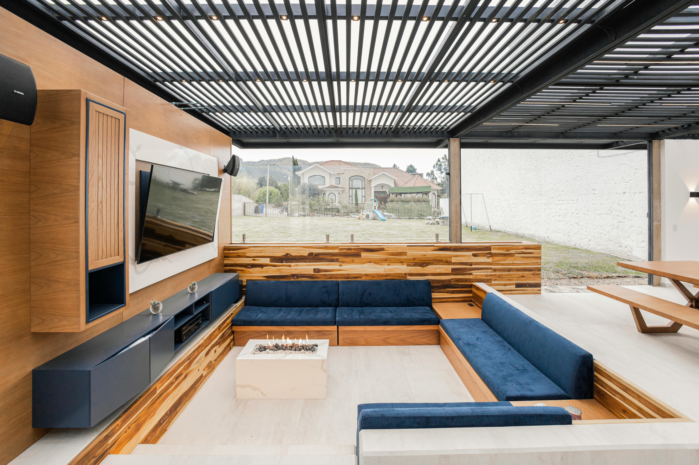

SCV Tech Blog
.
Security is no longer optional — it’s a critical part of your business technology stack. We make it simple, scalable, and reliable.

Top 5 Smart Home Upgrades to Consider in 2025
Smart home tech is no longer a luxury — it's a standard for comfort, efficiency, and peace of mind. Here are the top 5 upgrades SCV Tech recommends:
- Smart Security Cameras
Keep an eye on your home from anywhere with HD video, night vision, and AI motion alerts.
- Voice-Controlled Home Audio
Stream music in every room, control volume by voice, and enjoy immersive surround sound setups.
- Smart Thermostats & Lighting
Save energy with intelligent temperature and lighting automation that adjusts to your schedule.
- Ring, Nest & Wyze Integration
Doorbells, locks, and sensors that sync seamlessly to your smartphone — we install and configure it all.
- Control Systems
Unify your TVs, lights, audio, cameras, and more into one easy-to-use platform.
These upgrades add real value to your home, especially when professionally installed and tailored to your layout.
#smarthome #scvtech #smartlighting #homeautomation #custominstall
Why Every Business Needs Custom Security Solutions
Whether you run a retail store or a corporate office, the risks of outdated security tech are real. SCV Tech helps small businesses secure what matters with:
- Access Control Systems
Grant or restrict access to staff and visitors — no more loose keys or manual logs.
- Remote Monitoring & Mobile Alerts
Check live footage or receive alerts the moment motion is detected after hours.
- Wi-Fi & Network Optimization
A secure business starts with a stable, encrypted network — and we build it right the first time.
- Commercial-Grade Camera Installations
Clean cabling, proper coverage zones, and hidden power runs — done professionally.
Tech security is no longer optional — it's a core business asset.
#businesssecurity #accesscontrol #custominstall #commercialtech #scvtech
What to Know Before Your Home Theater Installation
Planning a home theater or media room? Here are tips from our installers:
- Prewire Your Walls
Even if you’re not ready for speakers yet, we recommend wiring during construction or remodels.
- Choose the Right Mounting Location
The TV isn’t always best at eye-level — it depends on seating and sunlight exposure.
- Hidden Equipment Racks
Want a clean look? We design systems with central hubs for receivers, wires, and remotes — out of sight.
- Soundproofing and Acoustic Layouts
Proper speaker placement and insulation make a huge difference in sound quality.
Every space is different — we design based on your actual room, not cookie-cutter kits.
#hometheater #customAV #tvinstallation #audiovisual #scvtech

Wi-Fi and Networking: How to Eliminate Dead Zones for Good
A reliable network is the foundation of your smart home or business — but most people settle for weak coverage, buffering, or dropouts. At SCV Tech, we install custom Wi-Fi and networking systems designed to keep your entire space connected.
Why DIY Systems Fall Short
Most store-bought routers can’t handle modern usage:
- Too many devices slow things down
- Concrete walls or large layouts block signals
- Placement often leads to dead zones in key areas
That’s where we come in.
SCV Tech Wi-Fi Solutions
- Mesh Wi-Fi Networks — Eliminate dead zones with multiple access points placed throughout your property
- Hardwired Ethernet Lines — Perfect for gaming, streaming, or remote work with zero lag
- Outdoor Wi-Fi — Coverage for patios, pools, and exterior cameras
- Business-Class Security — Encrypted, password-protected networks with guest logins and monitoring
Typical Signs You Need an Upgrade
- Zoom calls drop when you move rooms
- Your smart doorbell disconnects frequently
- Streaming pauses during movies
- You have a “tech closet” with a tangle of cables and no labels
How We Help
Our team sets up high-speed, professionally-installed networks for homes and small businesses. Every install includes cable management, setup, and testing to make sure it works exactly how you need it to.
#wifiinstall #networking #meshwifi #customav #scvtech

Outdoor TVs & Speaker Systems: Bring Entertainment Outside
An upgraded outdoor space isn’t complete without the right technology. Whether you’re entertaining guests, watching the big game by the firepit, or enjoying music on the patio, SCV Tech creates custom outdoor AV systems that perform in every season.
Why Go Outdoor?
Standard electronics aren’t built to handle sun, heat, rain, or dust. We install weather-rated TVs and speakers designed for full exposure — and make sure the installation looks just as good as it sounds.
Our Outdoor Solutions
- All-Weather TVs — Bright, anti-glare screens designed for daytime viewing, rain or shine
- Landscape Audio — Speakers disguised as rocks, lights, or buried in planters for subtle, powerful sound
- Smart Control Options — Stream music or control TV volume from your smartphone or voice assistant
- Concealed Cabling & Power — No extension cords or exposed wires — just a clean, permanent install
Ideal Spaces for Outdoor AV
- Covered patios and pergolas
- Poolside lounge areas
- Outdoor kitchens and BBQ stations
- Fire pits and backyard seating zones
What Sets SCV Tech Apart
We don’t just mount a TV and plug in a speaker — we:
- Consult on sun exposure and sightlines
- Run weatherproof power and signal lines
- Tune sound for the layout and acoustics
- Keep every cable hidden and secure
From start to finish, your outdoor setup is professionally designed and installed for seamless use.
#outdoorav #landscapeaudio #smartentertainment #allweathertv #scvtech

Common AV Troubleshooting Mistakes and How to Fix Them
AV problems can be frustrating. SCV Tech helps customers solve persistent issues quickly and professionally. Here's what you should avoid:
1. Using the Wrong Cables
Cheap or outdated HDMI and speaker cables cause:
- Poor audio or no signal
- Blurry video
- Loss of surround sound features like ARC or eARC
We install high-speed, shielded cables rated for 4K, Dolby Atmos, and long-distance runs.
2. Skipping Calibration
AV gear out of the box doesn’t sound or look its best. We properly calibrate:
- TV brightness, contrast, and HDR settings
- Surround sound speaker levels and delay
- Subwoofer placement and crossover tuning
3. Overloading the Network
If your streaming buffers or smart home devices drop off, your network may be maxed out. We assess load capacity and upgrade routers, mesh networks, or hardwired lines as needed.
4. Messy, Inaccessible Wiring
A tangle of unlabeled wires behind your TV or AV rack makes future upgrades or troubleshooting a nightmare. We label everything, secure it neatly, and hide it when possible.
When to Call SCV Tech
- Your TV setup feels overly complicated
- Audio cuts out, lags, or never sounds right
- Smart devices constantly disconnect
- You want to clean up years of DIY installs
We’ll inspect your current system, fix what’s not working, and future-proof the rest.
#avtroubleshooting #techsupport #customav #audiovisualrepair #scvtech